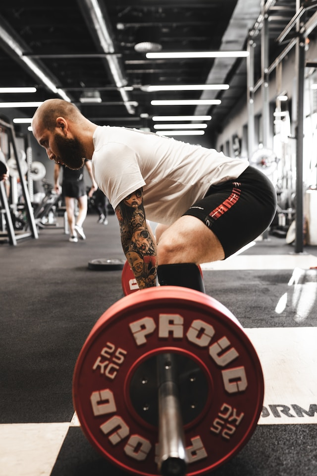

This has been one of my main passions since I was young playing games
with my mom (mostly letting her do all the stuff and pretending it was
me). I briefly pursued a career in esports for Overwatch at the end of
highschool since that was the game I was in love with at the time. I
spent alot of time training to be the best I could possibly be and
ultimately led me down a road of self-improvement and a sense of
perfectionism in my work today.

Fashion
Fashion is a more recent addition to the list of things I can't stop
thinking about! It started as something small exploring different
colors of clothes and fabrics instead of just a plain black shirt and
the most basic denim and has turned into something I am truly
passionate about. I hope to make something that allows for everyone to
easily get into fashion if they wanted to without spending a fortune
to get in on all the trends.

Sports
The main thing I grew up doing! While I've generally focused less on
this aspect over the years to focus on work and personal projects this
remains to be something I love to talk about and keep up on. I grew up
playing all the big sports, baseball, football, soccer, etc. In
highschool I decided to focus more on basketball and it is my favorite
sport to this day! Lifting weights is a big part of my life as well. I
think keeping a workout schedule and staying true to your diet are
such important things and train you for so many difficult things in
life.
